How to Import Vault Files into Vault 3
You can easily convert your Vault files to Vault 3 files:
- Run Vault and open the file you want to convert to Vault 3 format:
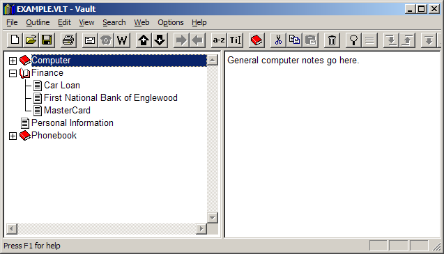
- Select Options / Settings, go to the Misc tab and make sure the "Number outline items in printouts, e-mails, and exports" check box is cleared.
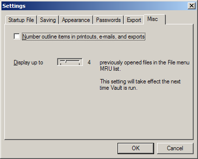
-
Select Outline / Collapse All:
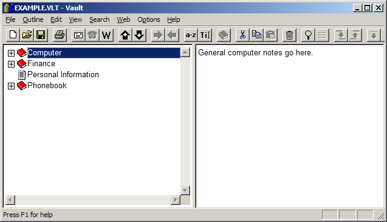
-
Select all outline items:
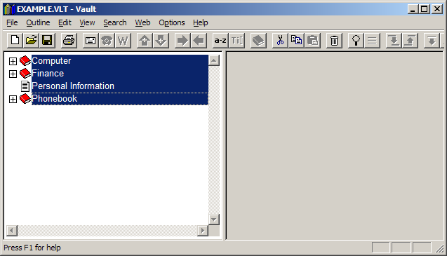
-
Select File / Export:
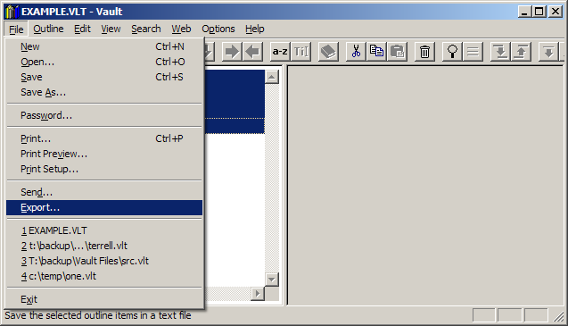
-
Specify the export filename and specify XML Files (*.xml) as the type.
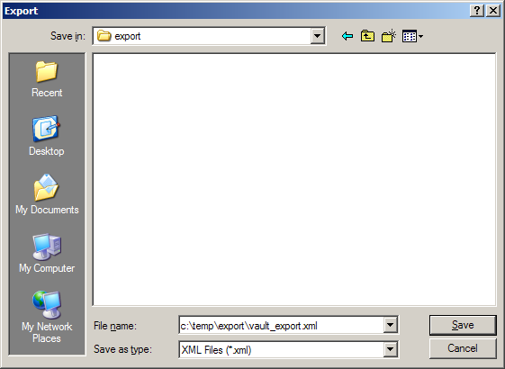
-
Press the save button.
- Go to Vault 3 and select File / Import Vault or The Photo Program XML File:
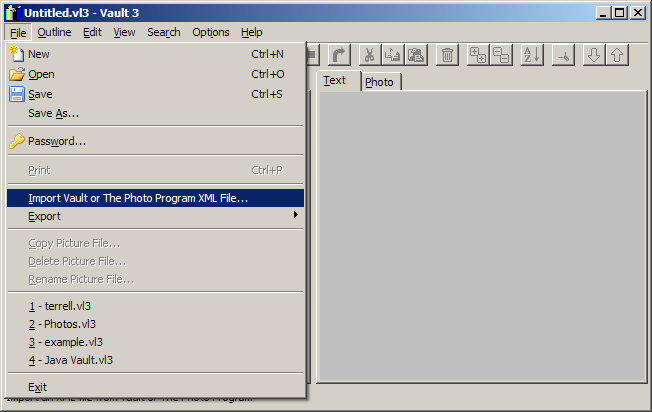
-
Navigate to the file you exported from Vault and click Open:
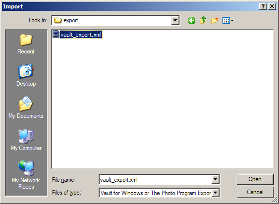
-
Expand the outline item by clicking the +:
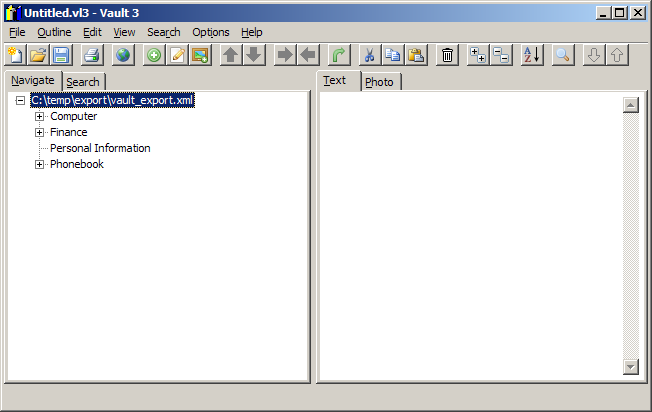
-
Select all items except for the first:
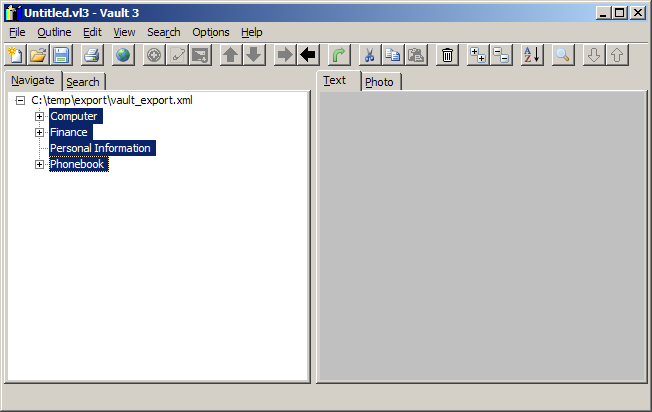
-
Select Outline / Unindent:
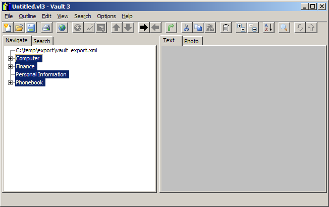
-
Select the first outline item. Then select Outline / Remove:
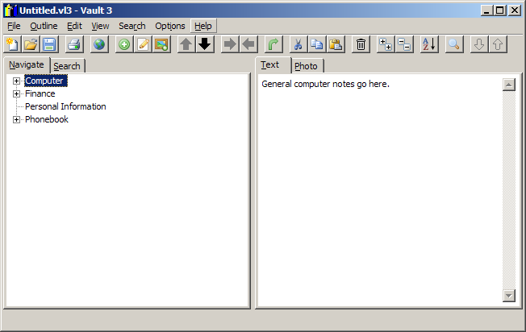